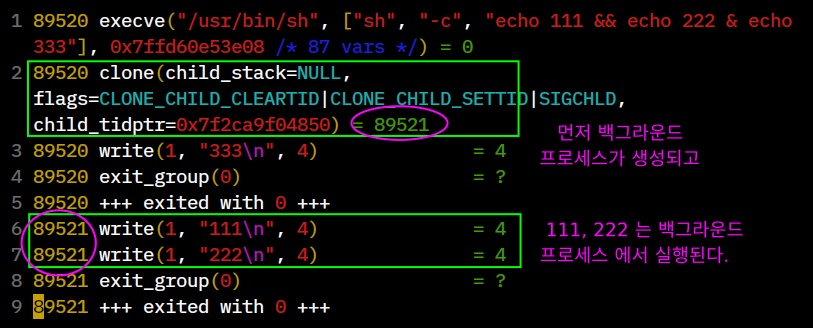

Precedence
&& , ||
Shell 에서 주의할 점 중의 하나가 &&, || 메타문자 우선순위입니다.
보통 프로그래밍 언어에서는 && 가 || 보다 우선순위가 높지만 shell 에서는
앞에서부터 차례로 명령이 실행되므로 우선순위를 같게 취급합니다.
따라서 다음과 같은 구문이 있을 경우
a || b && c
a 가 true 일 때 구문해석과 실행은 다음과 같습니다.
| 언어 | 해석 | 실행 |
|---|---|---|
| c/c++, java ... | ( a ) || ( b && c ) | a |
| shell | ( a || b ) && c | a, c |
결과적으로 프로그래밍 언어 에서는 a 가 실행이 된 후에 구문이 종료되나 shell 에서는 ( a || b ) 결과가 true 이므로 이후에 ( true && c ) 식이 실행되어 c 도 함께 실행되게 됩니다.
# $(( )) 에서는 프로그래밍 언어와 우선순위가 같으므로 a = 100 만 실행된다.
$ : $(( ( a = 100 ) || ( a = 200 ) && ( a = 300 ) ))
$ echo $a
100
# shell 의 경우는 먼저 a=100 가 실행되고 뒤이어 a=300 도 실행된다.
$ { echo 100; a=100 ;} || { echo 200; a=200 ;} && { echo 300; a=300 ;}
100
300
$ echo $a
300
우선순위 조절
Shell 에서 메타문자 우선순위 조절은 { ;} , ( ) 두가지 방법을 사용할 수 있습니다.
그러나 ( ) 는 subshell 이 생성되므로 { ;} 를 사용하는게 좋겠습니다.
$ true || true && false ; echo $?
1
# { ;} 를 사용
$ true || { true && false ;} ; echo $?
0
# ( ) 를 사용
$ true || ( true && false ) ; echo $?
0
| 파이프 와 &&, ||
파이프는 그룹으로 하나의 명령처럼 실행되므로 &&, || 보다 우선순위가 높습니다.
# 먼저 sleep 1 이 실행을 완료하면 이후에 sleep 2 와 sleep 3 이 동시에 실행됩니다.
$ time { sleep 1 && sleep 2 | sleep 3 ;}
real 0m4.009s
$ time { { sleep 1 && sleep 2 ;} | sleep 3 ;}
real 0m3.009s
# sleep 3 과 sleep 2 가 동시에 실행되고 완료되면 마지막으로 sleep 1 이 실행됩니다.
$ time { sleep 3 | sleep 2 && sleep 1 ;}
real 0m4.010s
$ time { sleep 3 | { sleep 2 && sleep 1 ;} ;}
real 0m3.009s
파이프 보다는 redirection 이 우선순위가 높다.
파이프 보다 redirection 이 우선순위가 높으므로
redirection 은 &&, || 보다 우선순위가 높겠죠.
$ echo hello | cat
hello
$ echo hello | cat <<< "world"
world
-----------------------------
$ cat test.sh
#!/bin/sh
echo 11111111 >&2 # 메시지를 stderr 로 출력
$ ./test.sh | ./test.sh # 두 개의 메시지가 모두 stderr 로 출력됨.
11111111
11111111
# 만약에 파이프가 우선순위가 높으면 두개의 메시지가 모두 /dev/null 로 출력되겠지만 그렇지 않으므로
$ ./test.sh | ./test.sh 2> /dev/null # 첫 번째 명령은 stderr 로 출력이 되고
11111111 # 두 번째 명령은 /dev/null 로 출력된다.
$ ./test.sh 2> /dev/null | ./test.sh 2> /dev/null
$
$ { ./test.sh | ./test.sh ;} 2> /dev/null
$
Redirection 우선순위
위에서 살펴본 바와 같이 redirection 은 메타문자 중에서 우선순위가 제일 높습니다. redirection 끼리는 다음과 같은 순서로 실행됩니다.
- 좌에서 우 로 실행 됩니다.
> 메타문자에 의해 z1, z2 두 파일의 내용은 삭제되며 echo 명령의 출력은 z2 파일로 가게 됩니다.
$ echo foobar > z1 > z2
$ cat z1
$ cat z2
foobar
{ ;},( )바깥에서 안쪽으로 실행됩니다.
z1, z2 두 파일의 내용은 삭제되며 echo 명령의 출력은 z1 파일로 가게 됩니다.
$ { echo foobar > z1 ;} > z2
$ cat z1
foobar
$ cat z2
& 는 앞선 명령문이 모두 포함된다.
& 메타문자는 ; 와 같은 역할을 하고 && , ||, | 로 연결된 명령들이 모두 포함됩니다.
$ echo $BASHPID; echo $BASHPID && echo $BASHPID # 현재 shell 의 PID 는 111320
111320
111320
111320
$ echo $BASHPID; echo $BASHPID && echo $BASHPID & # && 로 연결된 명령문도 모두
111320 # background 로 실행이 된다.
[1] 131622
131622
131622
[1]+ Done echo $BASHPID && echo $BASHPID
$ echo $BASHPID; echo $BASHPID && { echo $BASHPID & } # { } 를 이용하면 마지막 명령문만
111320 # background 로 실행할 수 있다.
111320
[1] 131642
131642
[1]+ Done echo $BASHPID
-------------------------------------------
$ date && uname | grep hello & seq 3
1
2
3
Fri Nov 20 20:27:40 KST 2020
1. "date && uname | grep hello &" 실행을 위해 background subshell 프로세스 생성.
2. 이후 "date && uname | grep hello" 명령들은 background 에서
"seq 3" 프로세스와는 별개로 독립적으로 실행됩니다.
3. 먼저 background subshell 을 생성하는 과정이 포함되기 때문에 위의 경우 "seq 3" 명령의
출력이 먼저 나오지만 스케줄러에 의해 date 명령의 출력이 먼저 나올수도 있는 것입니다.
예를 들어 다음 첫 번째 명령의 경우 mkfifo fifo 가 실행되기 전에
먼저 exec &> fifo 가 실행되어 fifo 파일이 생성되므로 오류가 됩니다.
mkfifo fifo 가 먼저 실행되려면 두 번째와 같이 괄호를 사용해서
우선순위를 설정해 줘야 합니다.
$ mkfifo fifo && tee < fifo term.log & exec &> fifo # ERROR
mkfifo: cannot create fifo 'fifo': File exists
$ mkfifo fifo && { tee < fifo term.log & exec &> fifo ;} # OK
$ exec 1>&0 2>&0
[1]+ Done
$ echo 111 && echo 222 & echo 333
333
111
222

! shell keyword
! logical NOT 키워드는 &&, || 보다 우선순위가 높습니다.
따라서 아래 첫 번째 경우는 ! 키워드가 [ 1 -eq 2 ] 에만 적용되는 것입니다.
[ 1 -eq 2 ] || [ 3 -eq 3 ] 식 전체에 적용하려면 두 번째와 같이 작성해야 합니다.
$ if ! [ 1 -eq 2 ] || [ 3 -eq 3 ]; then echo YES ;fi
YES
$ if ! { [ 1 -eq 2 ] || [ 3 -eq 3 ] ;} then echo YES ;fi
$
# '!' 키워드는 다음과 같은 명령 위치에서 다양하게 사용할 수 있습니다.
$ if ! { ! [ ... ] || ! [ ... ] ;} then ...
파이프는 그룹으로 하나의 명령처럼 실행되므로 ! 보다 우선순위가 높습니다.
$ if true | false; then echo YES; fi # true | false 는 결과가 false 이므로
$
$ if ! true | false; then echo YES; fi
YES
Quiz
/boot 디렉토리에 위치한 vmlinuz-$(uname -r) 리눅스 커널 파일은
bootsect.o, setup.o, misc.o 와 piggy.o 로 구성된 bzImage( big zimage ) 파일로
piggy.o 안에 vmlinuz 커널 이미지가 압축되어 있습니다.
커널 이미지는 ELF 포멧으로 되어 있는데요. 어떻게 분리해 낼 수 있을까요?
zImage 는 압축되어있는 커널 이미지를 self-extracting 하여 실행시킬 수가 있어서 부팅이 가능합니다. vmlinuz 는 vmlinux 커널 이미지의 심볼을 strip 하고 압축한 것입니다.
$ cat extract-vmlinux.sh
#!/bin/sh
trap 'exit' HUP INT QUIT TERM
trap 'rm -f "$tmpfile"' EXIT
vmlinuz=$1
tmpfile=`mktemp`
try_decompress()
{
echo "check $2" >&2
# magic number 를 이용해 압축파일의 위치를 찾습니다.
for pos in `LC_ALL=C grep -P -abo "$1" "$vmlinuz"`
do
pos=${pos%%:*} pos=$((pos + 1)) # grep 으로 나온 값에 +1 을 해야함
echo "pos : $pos" >&2
# $pos 이후의 파일내용을 파이프를 통해 압축해제 명령으로 전달합니다.
tail -c +$pos "$vmlinuz" | $2 > "$tmpfile" 2> /dev/null
# 압축해제된 파일이 elf 파일이 맞을 경우 cat 명령을 이용해 stdout 으로 출력합니다.
if readelf -h "$tmpfile" > /dev/null 2>&1; then
cat "$tmpfile"
exit
fi
done
}
# 첫 번째 인수값은 해당 압축파일의 magic number 입니다.
try_decompress '\037\213\010' gunzip
try_decompress '\3757zXZ\000' unxz
try_decompress 'BZh' bunzip2
try_decompress '\135\0\0\0' unlzma
try_decompress '\211\114\132' 'lzop -d'
try_decompress '\002!L\030' 'lz4 -d'
try_decompress '\050\265/\375' unzstd
echo >&2 "Cannot find vmlinux."
--------------------------------------------------------
$ sudo cp /boot/vmlinuz-`uname -r` .
$ sudo chmod +r vmlinuz-4.13.0-37-generic
$ file vmlinuz-4.13.0-37-generic
vmlinuz-4.13.0-37-generic: Linux kernel x86 boot executable bzImage, version
4.13.0-37-generic (buildd@lcy01-amd64-026) #42-Ubuntu SMP Wed Mar 7 14:13:23
UTC 2018, RO-rootFS, swap_dev 0x7, Normal VGA
$ ./extract-vmlinux.sh vmlinuz-4.13.0-37-generic > vmlinux
$ file vmlinux
vmlinux: ELF 64-bit LSB executable, x86-64, version 1 (SYSV), statically linked,
BuildID[sha1]=6bdee301cd0ea1b997183c1e367b640cf42aed7d, stripped
$ readelf -h vmlinux
ELF Header:
Magic: 7f 45 4c 46 02 01 01 00 00 00 00 00 00 00 00 00
Class: ELF64
Data: 2's complement, little endian
Version: 1 (current)
OS/ABI: UNIX - System V
ABI Version: 0
Type: EXEC (Executable file)
Machine: Advanced Micro Devices X86-64
Version: 0x1
Entry point address: 0x1000000
Start of program headers: 64 (bytes into file)
Start of section headers: 28160816 (bytes into file)
Flags: 0x0
Size of this header: 64 (bytes)
Size of program headers: 56 (bytes)
Number of program headers: 5
Size of section headers: 64 (bytes)
Number of section headers: 47
Section header string table index: 46